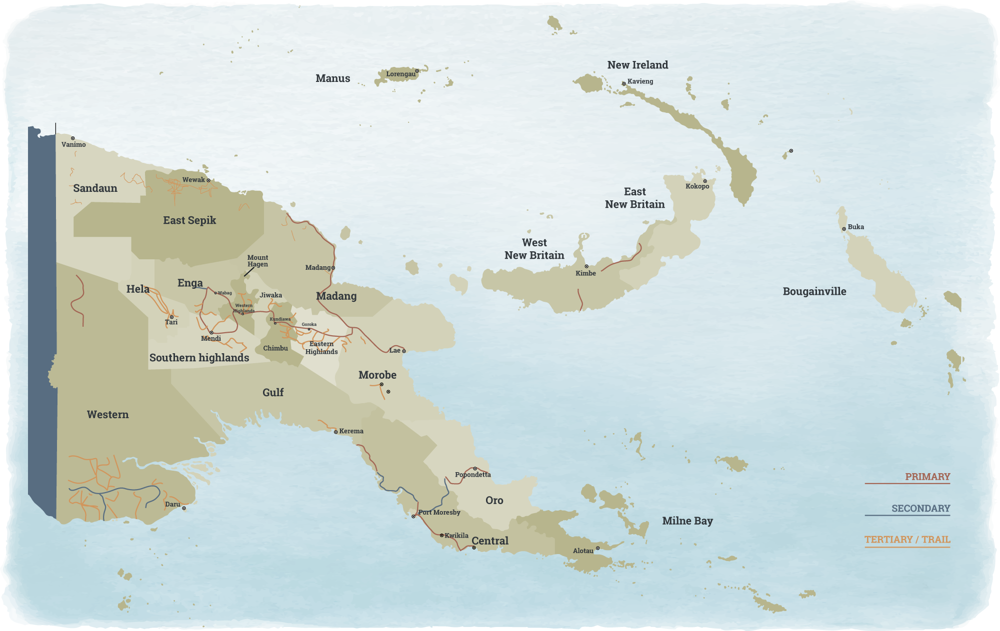

INFRASTRUCTURE CHALLENGES FOR
PAPUA NEW GUINEA'S FUTURE
PAPUA NEW GUINEA'S FUTURE
Climate, topography, population, culture, economics, and finance all conspire to raise significant barriers to providing economic and social infrastructure critical to Papua New Guinea's future development. Compared to developed economies, the physical stock of infrastructure assets in Papua New Guinea is insufficient to deliver the economic and social services needed to drive faster economic growth and improve human development. It faces significant choices as a result that may also be influenced by the public infrastructure requirements of foreign direct investment in export oriented extractive resource sectors. A lack of effective national infrastructure planning and funding constrain PNG's economy and its ability to improve the lives of its citizens through provision of these infrastructure services.
This paper briefly reviews several key infrastructure sectors - telecommunications, transport, energy, and urban water - to provide snapshots of their status, identify challenges, and where possible make relevant international comparisons.[1]
It also looks at ways to improve the delivery of relevant economic infrastructure: (i) effective planning and prioritisation; (ii) funding strategies for infrastructure investment; (iii) funding of ongoing infrastructure operations; and (iv) consideration of infrastructure life cycle issues. In addition, in the future effective economic regulation of PNG commercialised infrastructure services will help ensure that consumers benefit from these services. The Independent Consumer and Competition Commission will therefore have an increasingly important role to play.
Telecommunications in Papua New Guinea has improved significantly. Economic deregulation and the 2008 rollout of Digicell's network connected millions of PNG citizens to the internet. Despite this, service outages are commonplace and penetration remains among the lowest level in the world. Papua New Guinea was ranked 163 out of 169 countries by the International Telecommunications Union (ITU) in 2013 in terms of internet affordability.[2]
Papua New Guinea faces a number of telecommunications challenges. Internal prices are too high, limiting access and imposing undue costs on all levels of society. Entry-level internet packages appear to be above the ITU's benchmark required to accelerate internet penetration (i.e. less than 3-5 per cent of monthly average income).
A recent National Research Institute-Australian National University survey of schools and health clinics around Papua New Guinea, in both rural and urban areas, found a more nuanced and mixed progress in 2012 compared to 2002. Schools were on average in better condition and had more students and teachers. Health clinics on the other hand showed no growth at all in the number of patients using them, despite population growth of about 30 per cent over the decade. The O'Neill government's commitments to free health and education for all PNG citizens have yet to translate into tangible improvements.
To increase capacity, Papua New Guinea needs new international internet bandwidth. It also needs secure, reliable high-speed domestic connectivity infrastructure.[3]
These challenges are driven in part by the current performance of the PNG telecommunications market, which can be explained in terms of population penetration, connectivity, and market structure (Table 1).
| Population penetration | Connectivity | ||
| Wireless: | 47% | Submarine cables: | 2 (APNG-2 and PPC-1) |
| Fixed: | 1.9% | Active IXP: | 1 ongoing project |
| 3G/4G: | 16% | International broadband: | ~ 2.5 Gbps |
| Broadband: | 0.15% (fixed broadband) | ||
| Market structure | |||
| Mobile | Internet | ||
| Digicell | (Digicel) | Telecom PNG | (KCH) |
| BMobile | (KCH 85%, ADB) | Digicel | (Digicel) |
| Telecom PNG | (KCH) | Global Internet | (Global Tech) |
| Daltron | (Carpenter Group) | ||
| Fixed Line | Wireless | ||
| Telecom PNG | (KCH) | Dataco | (KCH) |
Note: ADB (Asian Development Bank), IXP (Internet Exchange Point), KCH (Kumul Consolidated Holdings) Source: World Bank, Papua New Guinea: International & Domestic Submarine Fiber Optic Cable Connectivity - Technical and Economic Evaluation & Implementation Options Report - Draft Final Report (2015)
Current demand for services is constrained by several factors. Fixed broadband penetration is essentially almost zero. Even though nearly half the population has wireless access, 3G/4G services across the country are scant as are fixed-line services. The latter may not be as relevant if the cost of establishing wireless services enables Papua New Guinea to 'skip' a generation of telephony infrastructure by avoiding copper wire installation and going direct to digital services.
Access to broadband is also determined by global connectivity. For a population of approximately 7.6 million, Papua New Guinea has two submarine cables providing approximately 2.5 Gbps of capacity. In contrast, Singapore, a high-income economy with a population of around 5.5 million, has 15 submarine cables landed at three separate locations providing bandwidth that exceeds 56.1Tbps.
Demand for bandwidth is rising in Papua New Guinea, and expected to grow from 2.5 Gbps at present to just over 450 Gbps by 2040 (medium scenario). [4] Given all the limits of its current infrastructure, Papua New Guinea will not be able to meet this demand (Figure 1).

Source: World Bank, Papua New Guinea: International & Domestic Submarine Fiber Optic Cable Connectivity - Technical and Economic Evaluation & Implementation Options Report - Draft Final Report (2015)
Several weaknesses of PNG telecommunications infrastructure need to be improved:
The role that public institutions can play in Papua New Guinea requires careful consideration because the telecommunications sector comprises both highly corporatised government entities and current and potential commercial participants. Government should:
Similarly, private telecommunications firms can play a role in Papua New Guinea where there is a conducive business climate that attracts investment capital and reduces public finance reliance. The attraction of having private sector engagement is the potential for rapid skill transfer and development in the field of information and communication technology. These firms can introduce business expertise and innovation in planning and design to ensure financial viability and customer focus. They can exert more financial and commercial discipline in telecommunications projects.
Telecommunications public-private partnerships (PPPs) integrate some of the advantages that the public and private sectors bring to these kinds of projects, provided there are appropriate trade-offs between public and private objectives in selecting, designing, and delivering telecommunications projects.
In Papua New Guinea, the introduction of new private sector network operators may encourage greater aggregation across geographic markets and cost sharing across all operator investors. However, new international or domestic telecommunications ventures will face challenging market economics and financial viability risks. Even where total demand generates sufficient revenue to cover total costs, the average cost per unit may still be high, use of new facilities inefficient and high prices charged. Effective economic regulation will need to address not only managing risks of monopolistic behaviour but also commercially relevant price paths that encourage greater competition and foster stronger consumer responses.
Transport infrastructure (road/water/air) and services are also restraining inclusive economic growth in Papua New Guinea. This holds back living standards and hampers measures to reduce poverty.

Small airstrip landing near Kokoda Track. Photo: Department of Foreign Affairs and Trade (flickr)
With some 600 islands and a topography that rises from sea level to 4500 metres, providing and improving transport infrastructure is a significant challenge in rural areas. Large sections of the population are isolated from social services, regional markets and income earning opportunities because of geography and poor transport infrastructure networks. The coverage and quality of PNG's transport networks lag far behind most other countries in Asia and the Pacific. The sustainability of transport infrastructure is also affected by climate change risk.
Transport infrastructure is unequally distributed across Papua New Guinea, resulting in unequal access to economic opportunities. It is not possible to travel by land between most provinces or ports. Coastal shipping services and aviation attempt to overcome these network gaps, but many of these services are not cost-effective.
Road transport. [5] The National Transport Strategy considers maintenance of the national priority roads the transport sector's greatest priority. Papua New Guinea contains approximately 22 000 kilometres of roads. The national road network comprises 8738 kilometres, only 40 per cent of which is sealed (Figure 2). The Department of Works is responsible for major road improvements and rehabilitation while the National Roads Authority is responsible for maintenance, with cooperation from the Department of Works.

Source: WFP Logistics, Papua New Guinea Logistics Infrastructure, "Papua New Guinea Road Assessment"
The focus of most road planning is the 4256 kilometres of national priority roads (i.e. half of all national roads, both sealed and unsealed) in 16 separate alignments. The condition of these roads has improved in recent years: 33 per cent of the national priority road network was in good condition in 2007, rising to 46 per cent by 2011. However, more than 75 per cent of national, provincial, and district roads become impassable at some time during the year. Rural accessibility to roads is low; just 68 per cent of the rural population living within 2 kilometres of access to an all-season road. [6] Estimates indicate that the frequency of crashes is very high by Pacific standards.
There are no main highways between the country's biggest city Port Moresby and the Highlands region, which is home to around 40 per cent of the population. And there are no major roads between Moresby and the Morobe-Madang-Sepik region in the northwest of the country. The ability to utilise alternative ports to meet the national freight task is therefore restricted and the national freight and logistics system has less resilience to natural disasters than would otherwise be the case.
Water transport. [7] Approximately 60 per cent of the population of Papua New Guinea resides on 6500 kilometres of coastline and waterways, many without access to roads. Water transport predominates in these areas, especially on smaller islands. With its dispersed population, PNG's coastal shipping services take on special significance in providing access to rural communities. Innumerable small wharves, jetties and beach landings provide the basic infrastructure for maritime services, but the majority of these is in poor condition and carries very little traffic. [8] Deaths due to the sinking of overloaded ferries are not uncommon. More than 100 people are estimated to die in small craft every year.
The state-owned PNG Ports Corporation (PNGPCL) operates 16 ports, while private corporations operate at least five more. Lae port handles nearly half the country's maritime freight. Port Moresby and Kimbe are the next largest ports and operate on a cost-recovery basis; the remaining 13 ports incur losses. The PNGPCL's domestic ports have generally low cargo processing costs and the national shipping market is competitive. While export distances are aligned with the regional average, PNG's international shipping is among the most expensive in the Pacific region, with lack of competition driving costs. It takes 23 days to export goods from Papua New Guinea (the same as the regional average).
Air transport. [9] In addition to the 22 international and regional airports owned and managed by the National Airports Corporation (NAC) (Figure 3), Papua New Guinea has hundreds of rural airstrips.
While recent investments financed by the Asian Development Bank have helped to lift standards, the overall condition of the NAC's airports has deteriorated over time and they are beginning to pose threats to safety. PNG Air Services (PNGASL) provides navigation services.
International air traffic serving the country's international gateway (Port Moresby's Jackson's International Airport) is very expensive with unit costs (per passenger, per nautical mile) on flights to Australia the most expensive in the Pacific. Air Niugini's unit cost on Asian routes is more than 2.5 times that of inter-Asian flights.

Source: WFP Logistics, Papua New Guinea Logistics Infrastructure
Papua New Guinea is an energy resource rich country with a diversified portfolio of potential energy assets. Its self-sufficiency in fossil fuels is unusual among Pacific nations. It also has a large hydro potential, estimated to be about 15 000 mW. Despite this energy abundance, Papua New Guinea is the least energy-intensive economy in the APEC region. [10] The major policy drivers facing Papua New Guinea are to develop gas reserves for LNG exports, increase gas use for electricity and develop renewable options for rural electrification focused on hydro.
Demand for electricity in Papua New Guinea is growing. [11] As economic growth translates into increasing household disposable income, consumption is expected to rise by 2.55 per cent per annum. Assuming population growth of 3 per cent per annum, [12] this implies an annual increase in demand for electricity of around 5.5 per cent per annum, putting considerable pressure on existing electricity systems.
Yet like much of PNG's infrastructure, the energy sector performs poorly and energy planning is inadequate. The sector is highly fragmented, with ageing and inadequate plant and distribution systems that will struggle to address PNG's future energy needs.
Electricity in Papua New Guinea is distributed through three main networks: (i) the Port Moresby system; (ii) the Ramu system serving the load centres of Lae, Mt Hagen, Madang, Goroka, Kainantu, Kundiawa, Yonki, Wabag, Mendi, and Gusap; and (iii) the Gazelle system that services the communities of Rabaul, Kerevat, and Kokopo (Figure 4). In addition, there are a number of relatively large, isolated industrial developments. The government also established around 150-200 'C' centres in the 1980s for the purpose of electrifying rural areas; however, very few of them remain operational. [13] The current unconnected nature of PNG's networks should be addressed. While an interconnection is not currently considered feasible between the Port Moresby grid and the Ramu system, increasing demand and the need for network resilience in the future may require an intervention.
Source: VisionRI Connexion Services Pvt Ltd, Power Sector Development Plan: Final Report - Main Report, TA 4932-PNG (Asian Development Bank and Department of Power and Energy (PNG), April 2009)
The Department of Power and Energy is notionally responsible for PNG's energy policy and planning. However, the state-owned and corporatised PNG Power Ltd (PPL) is almost by default the energy planner in Papua New Guinea by virtue of its technical capabilities and position at the centre of the major sources of electricity generation and network arrangements. Its commercial charter is not necessarily aligned with the economic development priorities of the nation. For example, prioritising a commercial return on the network addressing Port Moresby's energy needs may not meet the government's desire for more rural electrification.
PPL has been granted exclusivity for loads within 10 kilometres of its existing networks and individual customer loads of up to 10 mW within its network areas. It is a first step towards retail competition, because the maximum size of loads can be decreased over time as retail competition is extended. Significant areas of the country remain unserviced, so exclusivity provisions are unlikely to be onerous for potential market entrants. Third-party access at the retail level to existing electricity grids is likely to be more problematic, requiring careful consideration by the Independent Consumer and Competition Commission.
Many PPL generating stations require overhaul and maintenance. System losses have continued to increase, mainly caused by a poor power factor, [14] but also because of ageing transmission and distribution lines and inadequate and out-dated substations. The poor performance of the electricity sector has been driven by several factors in recent years:
To date, private sector participation in the power sector has not involved significant generation, transmission or distribution of electricity for retail customers (households, commercial businesses or industrial businesses). Participation has focused more on capital generation sources to support isolated industrial sites (primarily mining operations).
Some isolated power projects have been undertaken in the Western Province. Six mini-grids were established by PNGSEL, a fifty-fifty joint venture between PNG Sustainable Development Program (PNGSDP) and Snowy Mountains Engineering Corporation (SMEC).
PNG policymakers face a number of challenges in the energy sector:
A range of factors are limiting the creation of PPPs in PNG's energy sector. The highly dispersed electricity market and thin population density makes power distribution away from generation sources more costly. Independent power producers engage mainly with PPL, and so lack credit-worthy purchasers of their services. This thin market condition makes it challenging for independent power producers to develop viable projects that are not aligned with PPL's own commercial objectives. Most independent power producers are dedicated to specific resource projects rather than a heterogeneous customer base. Uniform tariffs and political considerations influence tariff increases, reducing revenues and making it difficult to improve the sector's creditworthiness and attract PPPs in the distribution sub-sector.
The role of non-government organisations and community organisations in rural access to electricity is often overlooked. These groups are critical in provision of stand-alone energy services such as solar and mini-hydro to remote areas in Papua New Guinea.
Basic water supply and sanitation are significant challenges for Papua New Guinea. Approximately 61 per cent of the population do not have access to safe water and 55 per cent do not have access to improved sanitation. Papua New Guinea is therefore denied many of the benefits that increased access to water and sanitation can provide: improved health of people through reduction in diarrhoea, malnutrition, and stunting; increased time and household income through safe and convenient water supply; greater productivity leading to economic development and higher rates of gross domestic product; and business and tourism development.
PNG's progress in improving the water and sanitation sector is held back by a number of impediments: [16]
Comparisons. Papua New Guinea has the lowest national water coverage of the Pacific region and is significantly below East Asia and Pacific and world comparators (Figure 5). Only the Marshall Islands has a lower percentage of piped coverage than Papua New Guinea. PNG's percentage of other improved water coverage is less than the world average and is the lowest for Pacific countries - a significant infrastructure challenge.
While very low, formal employment growth grew by 66 per cent between 2002 and 2016 (compared with population growth of 42 per cent). PNG's nominal GDP (both mining and non-mining) has tripled over the same period. However, employment levels have diminished since 2014 as economic growth continues to slow.
This employment growth masks difficult realities for PNG's young population. The ADB estimates that over 50 000 youths enter the labour market each year, while only a few thousand formal jobs are being created. The figure of 50 000 has been routinely quoted since the 1990s, and is in need of revision. The Department of Education reports that 23 692 students completed Grade 12 in 2016, competing for roughly 5000 places in tertiary institutions. Considering the majority of Papua New Guineans do not make it to Grade 12, the estimate of 50 000 youths entering the labour market each year is likely an underestimate.
Source: Annabel Brown, Trevor Nott and David Shaw, WaterAid PNG Country Program Evaluation: Final Report - July 2015
Sanitation coverage is also very low in Papua New Guinea, with significant implications for water supply and public health. PNG's coverage is less than one-third of East Asia and Pacific and world averages and is the lowest among the Pacific nations (Figure 6). All but three other Pacific nations have three times the level of coverage available to PNG citizens.
Source: Annabel Brown, Trevor Nott and David Shaw, WaterAid PNG Country Program Evaluation: Final Report - July 2015
Source: Annabel Brown, Trevor Nott and David Shaw, WaterAid PNG Country Program Evaluation: Final Report - July 2015
Over time, population growth has resulted in declining coverage in provision of water piped to the premises, falling nationally from 12 per cent to 9 per cent of the population between 1990 and 2012
Within Papua New Guinea, there is a significant divide between urban and rural areas. While more than half the urban population receives water piped to the premises, the coverage in rural areas (where more than 80 per cent of the population live) is 15-18 times lower.
Only a small proportion of the population benefit from improved water. The main improvement has been in 'Other improved' provision which has risen from 22 per cent of the population to 31 per cent between 1990 and 2012. However, the proportion of people accessing surface water has remained largely unchanged over a 20-year period, with continuing implications for public health.
Papua New Guinea faces a number of critical challenges in providing water infrastructure:
Water provision and sanitation are costly. Based on government targets for 2030, Papua New Guinea needs to spend on average US$31 million each year on water supply and US$70 million per year on sanitation. A further US$22 million per year is needed to finance the operation and maintenance of current and future infrastructure. Yet PNG's investment in the sector has averaged 0.3 per cent of GDP in recent years - just a third of the internationally recognised minimum allocation of 1 per cent. [19]
Fetching water from a stream. Photo: Asian Development Bank (flickr)
Papua New Guinea needs to move on from its build-neglect-rebuild paradigm and develop a significantly different approach to infrastructure development. This has to consider the full life cycle of infrastructure assets to ensure the expected benefits are realised for PNG, as this will drive sustainable growth and improve living standards. Government needs to devise robust long-term plans based on clearly defined national and local aspirations. It needs medium-term budgeting to support the development of a pipeline of well-conceived projects. It should focus more on maintenance and service enhancement through high-value/low-cost projects. Early user and community engagement, with increased transparency in decision-making, can potentially de-risk projects. This should be accompanied by early definition of land-use needs for new infrastructure corridors, followed by adequate land use control and acquisition.
Effective planning and prioritisation. Investment in infrastructure requires large amounts of capital, creates long-lived assets, produces long-term streams of benefits and has significant impacts - both positive and negative - on people, the environment, and the economy.
Once infrastructure is delivered, reversing it is difficult and expensive. Proper planning and prioritisation are vital, and are more cost-effective than ad hoc, opportunistic approaches to infrastructure.
Infrastructure projects have long lead times to marshal both the physical and human resources for delivery. Effective planning and prioritisation provides government and industry with a clear, predicable pathway to properly manage these large projects, and creates the conditions for a credible pipeline of public infrastructure projects. With proper planning, the PNG Government would be in a position to engage more effectively with the private sector for support in project development, design, funding, delivery, operation and maintenance, and pursue feasible PPPs that are more in PNG's national interest.
Life cycle infrastructure issues. Like many Pacific nations, Papua New Guinea does not place strong emphasis on a full life cycle focus for its public infrastructure assets. The Pacific Regional Infrastructure Facility (PRIF) has estimated that Pacific Island countries need to spend an average of 6 per cent of GDP just to maintain existing infrastructure. They also need to address a backlog of delayed maintenance and establish budgets for planned infrastructure maintenance (Table 2). [20]
| Stage | Rate (%) | Construct / Supply Only ($) | + Other Up-front ($) | 20 year Maintenance ($) |
| Concept and Planning | 2-5 | 2-5 | ||
| Detailed design specification | 5-10 | 5-10 | ||
| Construction / supply | 100 | 100 | ||
| Contingency / escalation | 10 | 10 | ||
| Contract supervision | 2-5 | 2-5 | ||
| Operating1 | variable | |||
| Maintenance - routine 2 | 0-5 | 0-100 | ||
| Maintenance -periodic 3 | 5-10 | 10-20 | ||
| Disposal and commissioning4 | variable | |||
| TOTAL | 100 | 120-130 | 10-120 |
Notes
1Varies from aero (eg. for buried pipes) to 20 per cent p.a. for mobile plant and equipment
2Varies from close to zero (e.g. for buried pipes) to five per cent p.a. for routine maintenance of assets such as gravel roads.
3Based on 20 year asset life with periodic maintenance every seven years.
4Varies from close to zero to 100 per cent (e.g. clean up of toxic chemical sheet)
Source: Pacific Infrastructure Advisory Centre, Infrastructure Maintenance in the Pacific: Challenging the Build-Neglect-Rebuild Paradigm (Sydney: PIAC, 2013)
By failing to undertake preventative maintenance of its infrastructure, Papua New Guinea is missing significant savings opportunities. Figure 8 shows a simple 'least cost' analysis of PNG road maintenance.
This example illustrates that preventative maintenance is far more cost-effective on a total life cycle cost over a 25-year period. While a no-maintenance approach delivers short-term savings, over the long term it is four times as expensive as a preventative maintenance strategy.
An effective framework for asset management would ensure that there is sufficient and appropriate planning to ensure the right assets are available to deliver required services. It would also include effective maintenance planning to maximise the services delivered from those assets, and minimise the cost of their delivery. Maintenance programs would include routine, periodic and urgent maintenance, as well as provision for rehabilitation or refurbishment instead of replacement. Further, assets should be adapted/developed to meet progressively changing needs of users and to take advantage of technological change.
Source: Pacific Infrastructure Advisory Centre, Infrastructure Maintenance in the Pacific: Challenging the Build-Neglect-Rebuild Paradigm (Sydney: PIAC, 2013)
Funding strategies for infrastructure investment. PNG's recent resource boom was intended to be channelled, in part, towards significant infrastructure investment. It spurred the establishment of Kumul Consolidated Holdings, which placed a number of government business enterprises under a commercial structure. However, budget revenues (or their management) have been insufficient to maintain existing infrastructure and make the necessary investments to grow the public asset base of the nation.
| Sector | 5 year total | 2016 | 2017 | 2018 | 2019 | 2020 | |
| Code | Description | ||||||
| 01 | Economic | 364.5 | 364.5 | 0.0 | 0.0 | 0.0 | |
| 02 | Infrastructure | 3,269.9 | 1,229.0 | 967.2 | 551.4 | 313.0 | 209.2 |
| 03 | Social Services | 2,777.2 | 1,015.8 | 636.4 | 423.2 | 390.7 | 311.2 |
| 04 | Law and Order | 1,277.3 | 179.9 | 389.9 | 365.2 | 339.2 | 3.0 |
| 05 | Administrative | 3,073.4 | 759.4 | 651.8 | 594.5 | 557.5 | 510.4 |
| 06 | Provinces | 6,654.1 | 1,547.4 | 1,408.4 | 1,271.0 | 1,183.3 | 1,244.0 |
| Grand total | 17,416.4 | 5,095.9 | 4,053.7 | 3,205.3 | 2,783.7 | 2,277.7 |
Source: PNG Budget Papers, Public Investment Program, 2016
PNG's planned spending on infrastructure (Table 3) drops away significantly over the forward estimates and is less (from 2018 to 2020) on an annual basis than public investment in administration. Spending in provinces over the five-year period is double that on infrastructure and by 2020 it is nearly six times the infrastructure investment. Papua New Guinea is not unique in its infrastructure problems. Developed economies have significant demand for infrastructure that cannot be met solely from the public purse. However, developed economies have a proportionately larger installed base of assets, more developed infrastructure markets, and a stronger acceptance of user pays to enable a more diverse set of funding streams.
The PNG Government does not have sufficient financial resources to fund the infrastructure necessary to drive further economic development and social progress. Other funding avenues need to be developed, whether investments by government agencies, investments by public or semi-public business enterprises, or investment by the private sector. Investment by PNG government business enterprises has been limited, because they operate in relatively undeveloped commercial markets with weak acceptance of the user pays principle.
Engagement with the private sector is most likely where the market for infrastructure services is most commercial. In Papua New Guinea, examples are the rapid expansion of mobile telephony and, to a lesser extent, some transport terminal operations (sea ports and airports) that have commercially oriented facility users. The future engagement of the private sector in Papua New Guinea will depend on establishing an attractive business environment, and clear justification that use of private capital will lower life cycle costs on a risk-adjusted basis.
PNG's budget position and relatively undeveloped markets for infrastructure services present major issues that affect funding of ongoing infrastructure operations. The significant decline in the number of 'C' class power generation facilities and the underfunding of the national road network are key challenges. Full life cycle analysis of infrastructure is not being done consistently across major economic and social infrastructure assets. Further, funding streams for operations are not always identified and secured at the time investment decisions are made. Finally, revenue models that attract and reward private sector participation are not strong enough to sustain the private revenue streams.
Opportunities to address the most critical infrastructure challenges identified in this paper are:
[1] While this paper considers these infrastructure issues from a national perspective, it is clear that significant challenges also exist at the sub-national level, particularly in terms of effective planning and coordination of infrastructure, as well as funding. The parliamentary basis for district funding and lack of a range of technical skills at the district level appear to constrain effective and sustained provision of infrastructure and related services.
[2] The National Research Institute, Why Are Internet Prices High in Papua New Guinea? Discussion Paper No 148, October 2016, prepared by Deloitte Touche Tohmatsu. Entry-level fixed broadband packages were estimated to cost 266 per cent of gross national income per capita. Since 2013 broadband wholesale prices have fallen by around 70 per cent, and over the last two years a 1GB package has fallen from 20-80 per cent of GNI per capita to around 10 per cent of GNI per capita.
[3] World Bank, Papua New Guinea: International & Domestic Submarine Fiber Optic Cable Connectivity - Technical and Economic Evaluation & Implementation Options Report - Draft Final Report (2015).
[4] Ibid.
[5] Asian Development Bank, "Sector Assessment (Summary): Transport", in Country Partnership Strategy: Papua New Guinea 2016-2020 (Manila: ADB, 2015), https://www.adb.org/documents/papua-new-guinea-country-partnership-strategy-2016-2020.
[6] It is clear that Papua New Guinea continues to under-resource maintenance, as budgeted funding for road maintenance is insufficient to address the task and allocated funding has reduced in recent years.
[7] Asian Development Bank, "Sector Assessment (Summary): Transport", in Country Partnership Strategy: Papua New Guinea 2016-2020.
[8] WFP Logistics, Papua New Guinea Logistics Infrastructure, "Papua New Guinea Port Assessment", http://dlca.logcluster.org/display/public/DLCA/2.1+Papua+New+Guinea+Port+Assessment.
[9] Asian Development Bank, "Sector Assessment (Summary): Transport", in Country Partnership Strategy: Papua New Guinea 2016-2020.
[10] APEC, APEC Energy Demand and Supply Outlook, 6th Edition (2016).
[11] VisionRI Connexion Services Pvt Ltd, Power Sector Development Plan: Final Report - Main Report, TA 4932-PNG (Asian Development Bank and Department of Power and Energy (PNG), April 2009).
[12]PNG's population increased by an average of 3.1 per cent per annum between the 2000 Census and 2011 Census. Between 1980 and 2011 the population more than doubled from 3 million to 7.3 million: PNG National Statistical Office, "Population: Summary of Findings", 2017, https://www.nso.gov.pg/index.php/population-and-social/other-indicators.
[13] These electricity supplies were mainly for government institutions and public servant housing, with any spare capacity being made available to the public, church and mission organisations, and commercial businesses. However, most 'C' centres did not provide spare capacity.
[14] The power factor is the ratio of real power flowing to a load to the apparent power in the system.
[15] VisionRI Connexion Services Pvt Ltd, Power Sector Development Plan: Final Report - Main Report.
[16] Contextual factors such as political volatility, poor access from a lack of roads, no electricity, customary land ownership, and ethnic conflict also hamper progress.
[17] The establishment of a water, sanitation, and hygiene (WASH) project management unit within the Department of National Planning and Monitoring supported by the World Bank, the Asian Development Bank and Japan International Cooperation Agency with the intention of developing an improved service delivery framework is an important step.
[18] In some instances, increasing population has put stress on natural water systems.
[19] International Bank for Reconstruction and Development and World Bank, Water Supply and Sanitation in Papua New Guinea: Turning Finance into Services for the Future, Service Delivery Assessment, July 2013 (PNG Department of National Planning and Monitoring, PNG Department of Health, Water PNG, Eda Ranu, WaterAid, World Bank Group and Water and Sanitation Program, 2015).
[20] Pacific Infrastructure Advisory Centre, Infrastructure Maintenance in the Pacific: Challenging the Build-Neglect-Rebuild Paradigm (Sydney: PIAC, 2013).
Top image: Buses used by the electoral commission to transport ballot boxes and election officials in Port Moresby 26 June 2012. Tarami Legei/Commonwealth Secretariat.
Craig Lawrence brings over 28 years' experience in the infrastructure sector, working on government, private sector and development projects, particularly in infrastructure and transport. His expertise includes over 100 separate economic, financial or commercial appraisals and modelling assignments, and he is highly experienced in supporting governments and businesses to make informed infrastructure investment decisions, including in the telecommunications, civil and electricity subsectors. Craig has advised investment banks and infrastructure managers on strategic, commercial issues. Craig is currently the Infrastructure Planning, Policy and Finance Adviser on ASI's design of the Department of Foreign Affairs and Trade's PNG Economic and Social Infrastructure Program. He was also recently the Team Leader and Transport Specialist for the Agency Capacity Diagnostic of the PNG Department of Transport under DFAT's Transport Sector Support Program in Papua New Guinea.
These papers presenting a country snapshot of Papua New Guinea in 2017 were produced with the support of ExxonMobil. More